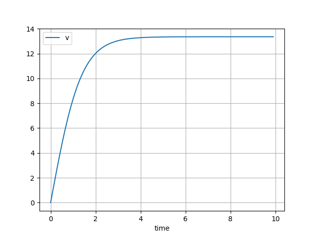

Running a simulation
Warning
The simulation capability of psymple is fairly rudimentary. These features are currently
designed to exemplify the functionality of the rest of the package.
A Simulation takes a copy of the variables and parameters of a compiled system and numerically simulates them.
There are currently two types of simulation in psymple:
- A continuous simulator
ContinuousIntegrator, which provides an interface toscipy.integrate.solve_ivp, and should be used for any meaningful simulation. - A discrete, Euler forward integrator
DiscreteIntegratorwith fixed time step, which should only be used for basic prototyping and testing.
A simulation can also produce a basic plot of the solution.
Example
The code defining the model and system for the example of an object falling vertically, subject to gravitational and air resistance forces is in the following drop-down box.
Falling object example
from psymple.build import (
FunctionalPortedObject,
VariablePortedObject,
CompositePortedObject,
System,
)
v_gravity = VariablePortedObject( # (1)!
name="v_gravity",
assignments=[("v", "g")],
)
v_drag = VariablePortedObject(
name="v_drag",
assignments=[("v", "-mu * v**2")],
)
f_drag = FunctionalPortedObject(
name="f_drag",
assignments=[("mu", "frac_0(1/2 * C * rho * A, m, 0)")], # (2)!
)
model = CompositePortedObject(
name="model",
children=[v_gravity, v_drag, f_drag],
input_ports=["C", "rho", "A", "m"],
variable_ports=["v"],
directed_wires=[
("C", "f_drag.C"),
("rho", "f_drag.rho"),
("A", "f_drag.A"),
("m", "f_drag.m"),
("f_drag.mu", "v_drag.mu"),
],
variable_wires=[
(["v_gravity.v", "v_drag.v"], "v")
],
)
frac_0 = lambda a,b,d: a/b if b != 0 else d
S = System()
S.add_utility_function(name="frac_0", function=frac_0)
S.add_system_parameter(name="g", function=9.81)
S.set_object(model)
To create a simulation, use the method S.create_simulation. This method can be passed:
name, which if provided stores the simulation inS.simulations,solver, which can be either"continuous"(default) or"discrete", identifying the solver to use,initial_values, which are the initial values of the variables in the simulation,input_parameters, values for the parameters, if all are not already specified.
For example, to simulate the system with an initial value v = 0 and input parameters {"C": 1.1, "rho": 1, "A": 0.2, "m": 2}:
sim = S.create_simulation(initial_values = {"v": 0}, input_parameters={"C": 1.1, "rho": 1, "A": 0.2, "m": 2})
sim.simulate(t_end=10)
Plotting a solution
A simple plot of the solution can be made with the plot_solution method.

Running this checks that the model looks good, with the velocity of the object increasing from \(0\) up to a terminal velocity around \(13.35 \mathrm{ms}^{-1}\).
The time series used to plot each variable can also be accessed:
>>> sim.variables["v"].time_series
[ 0. 0.97923946 1.94796176 2.89593846 3.81406616 4.69461378
5.531223 6.31890829 7.05405692 7.73442888 8.35915699 8.92874681
9.44516434 9.91112194 10.32931506 10.70265493 11.03427106 11.32751127
11.58594164 11.81334655 12.01362701 12.18970386 12.34379319 12.47806946
12.59467598 12.69572483 12.78329689 12.85944188 12.92614085 12.98463984
13.0355645 13.07955469 13.11728755 13.1494775 13.17687617 13.2002725
13.22049264 13.23840004 13.25452244 13.2687636 13.28116799 13.2918139
13.30081302 13.30831042 13.31448454 13.31954719 13.32374356 13.32735222
13.3306851 13.33401797 13.33717311 13.34004593 13.34258692 13.34476324
13.34655868 13.34797371 13.34902546 13.3497477 13.35019088 13.35042211
13.35052514 13.35060039 13.35076494 13.35115254 13.35177901 13.35246466
13.35315992 13.35382427 13.35442399 13.35493211 13.35532848 13.35559975
13.35573932 13.35574741 13.35563102 13.35540394 13.35508674 13.35470679
13.35429825 13.35390207 13.35356597 13.35334448 13.35329891 13.35348937
13.35376549 13.35403516 13.35428714 13.35451238 13.35470398 13.35485719
13.35496943 13.35504028 13.35507149 13.35506695 13.35503273 13.35497705
13.35491029 13.35484501 13.3547959 13.35477983]
Next steps
Many more examples of creating and simulating models in psymple can be found in the Examples section.